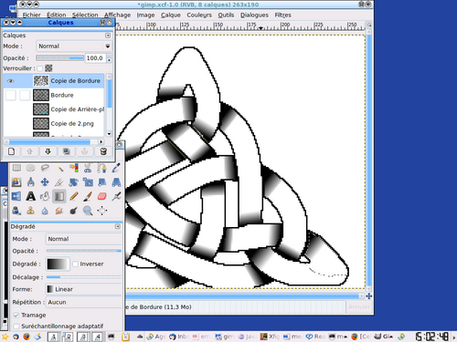
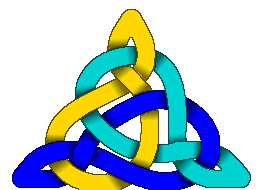

Vous avez à votre disposition le logiciel Knotsbag qui fait de très beaux dessins sur ordinateur (multiplateforme windows/mac/linux).
Mais si vous voulez faire à la main, vous pouvez aussi, avec des logiciels libres, un éditeur de dessin vectoriel et un éditeur d’images. J’ai choisi ceux que je connais, xfig et GIMP. Mais vous pourriez utiliser inkscape et heu... au hasard, GIMP (sans dèc’, on ne peut simplement pas s’en passer).
 Alors on fait le dessin du graphe avec xfig et on utilise l’outil "spline" pour tracer le milieu des routes, on met chacune à une profondeur différente.
Alors on fait le dessin du graphe avec xfig et on utilise l’outil "spline" pour tracer le milieu des routes, on met chacune à une profondeur différente.
Puis on exporte chaque couche en PNG, une couche par brin.
 On importe alors chaque couche dans un calque différent sous gimp.
On importe alors chaque couche dans un calque différent sous gimp.
 On coupe le blanc en "sélectionnant par couleur", en cliquant dans le blanc et en supprimant cette couleur, on voit donc superposées ces (trois) calques les uns par dessus les autres.
On coupe le blanc en "sélectionnant par couleur", en cliquant dans le blanc et en supprimant cette couleur, on voit donc superposées ces (trois) calques les uns par dessus les autres.
Il faut d’abord résoudre les "auto-intersections", là où un brin se recoupe lui-même. On met à part le morceau de brin qui passe au-dessus, dans un calque spécial.
 On « gonfle » chaque brin du même facteur, on sélectionne un calque, puis par couleur le brin tout entier, puis Sélection>Aggrandir (disons 8 pixels ici), puis on remplit de la même couleur : on sélectionne la couleur avec la pipette et on en remplit toute la sélection avec le seau.
On « gonfle » chaque brin du même facteur, on sélectionne un calque, puis par couleur le brin tout entier, puis Sélection>Aggrandir (disons 8 pixels ici), puis on remplit de la même couleur : on sélectionne la couleur avec la pipette et on en remplit toute la sélection avec le seau.
{kind=link}
On assombrit ensuite les contours : Sélection>Bordure, puis on ajoute (Shift-Couleur par sélection) l’autre morceau de la même couleur, une nouvelle fois Bordure, qu’on copie-colle dans un nouveau calque, qu’on remplit de noir, et qu’on étiquette à la fin avec l’option "Noircir seulement" et dont on met la transparence au niveau désiré.
Puis on enlève, avec Sélection par couleur puis Ctrl-Lasso, un voisinage de la moitié des croisements d’une couche. Puis, en sélectionnant tour à tour toutes les autres couleurs, on fait Édition>Effacer la sélection (Touche Suppr.). Ainsi, les dessus-dessous sont clarifiés.
Ensuite, on peut faire des dégradés dans un nouveau calque copie de celui concernant les bordures, dont on remplit, composante de brin par composante, avec l’outil dégradé (touche L) : on sélectionne avec la baguette magique (touche U) un brin qui passe en dessous, on intersecte avec le lasso (touche F+Ctrl-Shift) et on y met un dégradé de gris. On contrôle ensuite l’opacité de ce dégradé.
{kind=link}
Et voilà ! 
{kind=link}